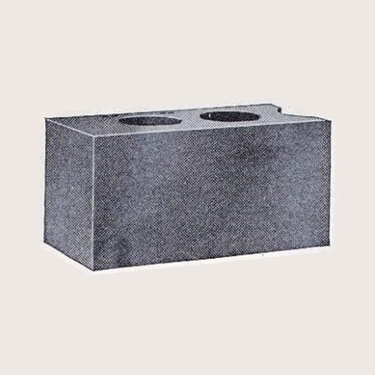
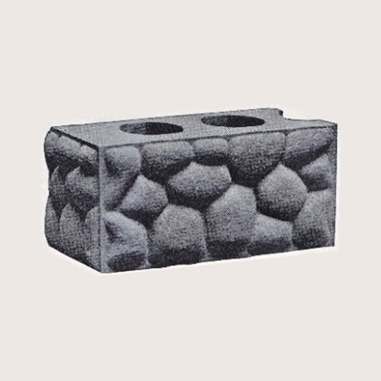
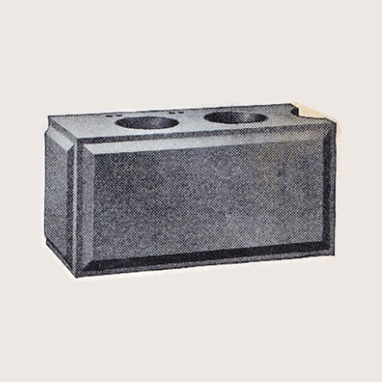
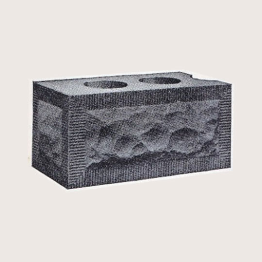
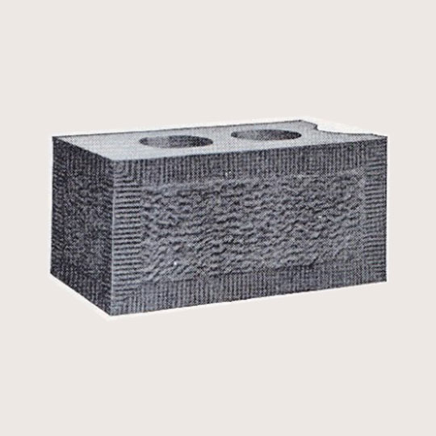
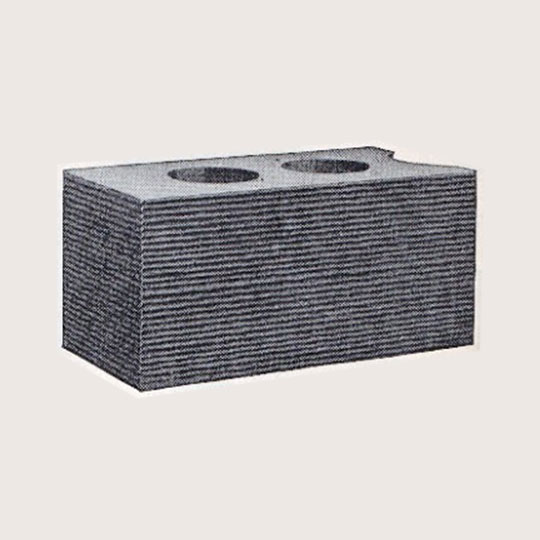

Designs We Furnish for Our Block Machines
(Taken from the Sears, Roebuck and Co., Chicago)

Design No. 4. Standard Plain Face.
Can be furnished in all Divisions. But one endgate needed.

Design No. 5. Cobblestone Face.
A fine 'above ground' foundation block. 16-inch plate not made in Division D. Division F not made in any size. But one endgate needed.

Design No. 6. Panel Face.
16-inch plate not made in Division D. But one endgate needed.

Design No. 7. Rock Face With 1 1/2-Inch Tooled Edge.
16-inch plate not made in Divisions C and D. Division F not made in any size. But one endgate needed.

Design No. 8. Bushhammer Face With 1 1/2-Inch Tooled Edge.
16-inch plate not made in Divisions C and D. Division F not made in any size. But one endgate needed.

Design No. 9. Horizontal Tooled Edge.
But one endgate needed.